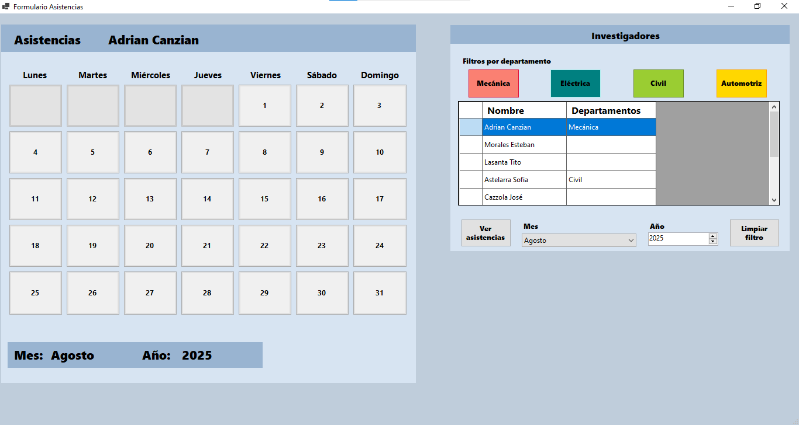

Asistencias de investigadores
Aplicación de escritorio en C# con Windows Forms para registrar y administrar las asistencias del personal investigador.
Desarrollador .NET Backend de Buenos Aires, Argentina. Especializado en la construcción de aplicaciones web y de escritorio.
UTN - FRGP | 5/2025 - Actualmente
Colaboro en tareas administrativas y de oficina, incluyendo la organización de documentación, atención a investigadores y soporte en gestiones internas.
Además, desarrollo una aplicación de escritorio en C# con Windows Forms para registrar y administrar las asistencias del personal investigador. Este proyecto contribuye a la modernización del área y me permite aplicar conocimientos en desarrollo de software y bases de datos en un entorno real.
Volkswagen - Planta Pacheco | 3/2023 hasta 12/2023
Participé en un entorno de trabajo real en el área de calidad, junto a tutores, desarrollando habilidades en la resolución de problemas técnicos y la documentación de procesos. Trabajé en equipo en entornos estructurados, demostrando adaptabilidad y aprendizaje rápido en nuevos sistemas.
Aplicación de escritorio en C# con Windows Forms para registrar y administrar las asistencias del personal investigador.
Hola 👋! soy Tomas, estudiante de la Tecnicatura en Programación y apasionado por el desarrollo de software. De manera autodidacta, amplío mis conocimientos en C# .NET, WinForms, SQL y Git/GitHub, con el objetivo de desarrollarme como desarrollador en la industria IT.
Me destaco por mi predisposición para el trabajo en equipo, capacidad de comunicación efectiva y enfoque en resultados. Me adapto con facilidad a nuevos desafíos y disfruto aprender continuamente para mejorar mis habilidades en desarrollo de software.